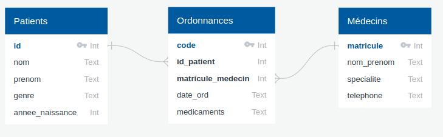
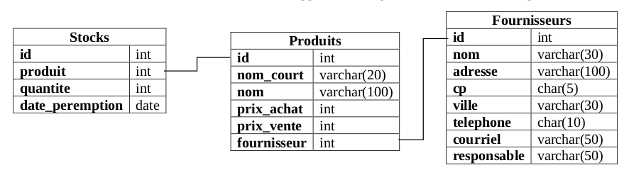

Exercices SQL débranchés⚓︎
Exercice 1
(d'après Prépabac NSI, Terminale, G.CONNAN, V.PETROV, G.ROZSAVOLGYI, L.SIGNAC, éditions HATIER.)
On veut créer une base de données baseHopital.db qui contiendra les trois tables suivantes :
| Patients | |
|---|---|
| id | Int |
| nom | Text |
| prenom | Text |
| genre | Text |
| annee_naissance | Int |
| Ordonnances | |
|---|---|
| code | Int |
| id_patient | Int |
| matricule_medecin | Int |
| date_ord | Text |
| medicaments | Text |
| Medecins | |
|---|---|
| matricule | Int |
| nom_prenom | Text |
| specialite | Text |
| telephone | Text |
On suppose que les dates sont données sous la forme jj-mm-aaaa.
On donne le diagramme relationnel de cette base : 
Q0. Écrire le schéma relationnel de la table Ordonnances. On soulignera les clés primaires et marquera d'un # les clés étrangères.
Correction
Ordonnaces ((code, Int), (id_patient#, Int), (matricule_medecin#, Int), (date_ord, Text), (medicaments, Text))
Q1. (HP) Donner les commandes SQL permettant de créer ces tables.
Correction
CREATE TABLE Patients(
id INTEGER PRIMARY KEY,
nom TEXT,
prenom TEXT,
genre TEXT,
annee_naissance INTEGER
);
CREATE TABLE Ordonnances(
code INTEGER PRIMARY KEY,
id_patient INTEGER,
matricule_medecin INTEGER,
date_ord TEXT,
medicaments TEXT,
FOREIGN KEY(id_patient) REFERENCES Patients(id),
FOREIGN KEY(matricule_medecin) REFERENCES Medecins(matricule)
);
CREATE TABLE Medecins(
matricule INTEGER PRIMARY KEY,
nom_prenom TEXT,
specialite TEXT,
telephone TEXT
);
Q2. Mme Anne Wizeunid, née en 2000 et demeurant 3 rue des Pignons Verts 12345 Avonelit doit être enregistrée comme patiente numéro 1. Donner la commande SQLite correspondante.
Correction
INSERT INTO Patients VALUES (1, "Wizeunit", "Anne", "F", 2000);
Q3. Le patient numéro 100 a changé de prénom et s'appelle maintenant "Alice". Donner la commande SQLite modifiant en conséquence ses données.
Correction
UPDATE Patients SET prenom = 'Alice' WHERE id = 100 ;
Q4. Par souci d'économie, la direction décide de se passer des médecins spécialisés en épidémiologie. Donner la commande permettant de supprimer leurs fiches.
Correction
DELETE FROM Medecins WHERE specialite = "épidémiologie";
Q5. Donner la liste des patient(e)s ayant été examiné(e)s par un(e) psychiatre en avril 2020.
Correction
SELECT p.nom, p.prenom FROM Patients AS p
JOIN Ordonnances AS o ON p.id = o.id_patient
JOIN Medecins AS m ON o.matricule_medecin = m.matricule
WHERE m.specialite = "psychiatrie" AND o.date_ord LIKE "%04-2020%"
Exercice 2
basé sur le travail de G.Viateau (Bayonne)
On considère ci-dessous le schéma de la base de données du stock d'un supermarché :

Q1. Quelle requête SQL donne le prix d'achat du produit dont le nom_court est «Liq_Vaiss_1L» ?
Correction
SELECT prix_achat FROM Produits WHERE nom_court = 'Liq_Vaiss_1L'
Q2. Quelle requête donne l'adresse, le code postal et la ville du fournisseur dont le nom est «Avenir_confiseur» ?
Correction
SELECT adresse, cp, ville FROM Fournisseurs WHERE nom = 'Avenir_confiseur';
Q3. Quelle requête donne les produits étant en rupture de stock ?
Correction
SELECT Produits.nom FROM Produits
JOIN Stocks ON Produits.id = Stocks.produit
WHERE Stocks.quantite = 0;
Q4. Quelle requête donne la liste de toutes les ampoules vendues en magasin ? On pourra faire l'hypothèse que le nom du produit contient le mot «ampoule»
Correction
SELECT nom FROM Produits WHERE nom LIKE "%ampoule%";
Q5. Quelle requête permet d'avoir le prix moyen de ces ampoules ?
Correction
SELECT AVG(prix_vente) FROM Produits WHERE nom LIKE "%ampoule%";
Q6. Quelle requête permet d'identifier le produit le plus cher du magasin ?
Correction
SELECT nom_court FROM Produits ORDER BY prix_vente DESC LIMIT 1;
SELECT nom FROM Produits WHERE prix_vente = (SELECT MAX(prix_vente) FROM Produits);
Q7. Quelle requête renvoie les noms des produits dont la date de péremption est dépassée ? (on pourra utiliser la fonction SQL NOW() qui renvoie la date actuelle )
Correction
SELECT p.nom FROM Produits AS p
JOIN Stocks AS s ON s.produits = p.id
WHERE s.date_peremption < NOW();
Exercice 3
Exercice 1 du sujet Amérique du Sud J1 2022
Correction
Correction Q1.a.
La relation Sport a pour clé primaire le couple NomSport et nomStation, et pour clé étrangère l'attribut nomStation, clé primaire de la relation Station.
Correction Q1.b.
-
Contrainte d'intégrité de domaine : l'attribut Prix doit être un nombre entier.
-
Contrainte d'intégrité de relation : le couple (nomSport, nomStation) ne peut pas se retrouver deux fois dans la table (car il forme une clé primaire)
-
Contrainte d'intégrité de référence : l'attribut nomStation ne peut pas être un nom n'apparaissant pas dans la relation Station.
Correction Q2.a.
La commande INSERT ne sert que pour insérer de nouveaux enregistrements, or le couple ("planche à voile" , "La tramontane catalane") existe déjà dans la relation (et c'est une clé primaire donc on ne peut pas la retrouver deux fois). Il faut donc utiliser :
UPDATE Sports SET prix = 1350
WHERE nomSport = "planche à voile" AND nomStation = "La tramontane catalane"
Correction Q2.b.
INSERT INTO Station VALUES ("Soleil Rouge", "Bastia", "Corse")
INSERT INTO Sport VALUES ("plongée", "Soleil Rouge", 900)
Correction Q3.a.
SELECT mail FROM Client
Correction Q3.b.
SELECT nomStation FROM Sport
WHERE nomSport = "plongee"
Correction Q4.a.
SELECT Station.ville, Station.nomStation FROM Station
JOIN Sport ON Sport.nomStation = Station.nomStation
WHERE Sport.nomSport = "plongee"
Correction Q4.b.
SELECT COUNT(*) FROM Sejour
JOIN Station ON Station.nomStation = Sejour.nomStation
WHERE Sejour.annee = 2020 AND Station.region = "Corse"
Exercice 4
Exercice 4 du sujet Centres Étrangers J1 2022
Correction
Correction Q1.a.
L'attribut id_mesure semble une clé primaire acceptable car elle semble spécifique à chaque enregistrement.
Correction Q1.b.
L'attribut id_centres semble être une clé primaire de la relation Centres. On le retrouve aussi (sous le même nom) dans la relation Mesures. C'est donc un attribut qui permettra de faire une jointure entre les deux relations.
Correction Q2.a.
Cette requête va afficher tous les renseignements disponibles sur les centres dont l'altitude est strictement supérieure à 500m.
Correction Q2.b.
SELECT nom_ville FROM Centres
WHERE altitude >= 700 AND altitude <= 1200;
Correction Q2.c.
SELECT longitude, nom_ville FROM Centres
WHERE longitude > 5
ORDER BY nom_ville;
Correction Q3.a.
Cette requête va afficher tous les renseignements sur les mesures datées du 30 octobre 2021.
Correction Q3.b.
INSERT INTO Mesures VALUES (3650, 138, 2021-11-08, 11, 1013, 0);
Correction Q4.a.
Cette requête va renvoyer tous les renseignements sur les centres dont la latitude est la latitude minimum de tous les centres.
Correction Q4.b.
SELECT DISTINCT Centres.nom_ville FROM Centres
JOIN Mesures ON Mesures.id_centre = Centres.id_centre
WHERE Mesures.temperature < 10
AND Mesures.date <= 2021-10-31
AND Mesures.date >= 2021-10-01;
Exercice 5
Exercice 4 du sujet Métropole J2 2022
Correction
Correction Q1.a.
Hey Jude
I Want To Hold Your Hand
Correction Q1.b.
SELECT nom FROM interpretes
WHERE pays = 'Angleterre';
Correction Q1.c.
I Want To Hold Your Hand, 1963
Like a Rolling Stone, 1965
Respect, 1967
Hey Jude, 1968
Imagine, 1970
Smells Like Teen Spirit, 1991
Correction Q1.d.
SELECT COUNT(*) FROM morceaux;
Correction Q1.e.
SELECT titre FROM morceaux
ORDER BY titre;
Correction Q2.a.
La clé étrangère de la table morceaux est l'attribut id_interprete qui fait référence à la clé primaire id_interprete de la table interpretes.
Correction Q2.b.
morceaux : ((id_morceau, Int), (titre, Text), (annee, Int), (id_interprete#, Int))
interpretes : ((id_interprete, Int), (nom, Text), (pays, Text))
Correction Q2.c.
La requête va renvoyer une erreur car la clé primaire 1 est déjà présente dans la table : il s'agit d'une violation de la contrainte de relation.
Correction Q3.a.
UPDATE morceaux
SET annee = 1971
WHERE titre = 'Imagine'
Correction Q3.b.
INSERT INTO interpretes
VALUES (6, "The Who", "Angleterre")
Correction Q3.c.
INSERT INTO morceaux
VALUES (7, "My Generation", 1965, 6)
Correction Q4.
SELECT morceaux.titre
FROM morceaux
JOIN interpretes ON interpretes.id_interprete = morceaux.id_interprete
WHERE interpretes.pays = "États-Unis"
Exercice 6
Exercice 2 du sujet La Réunion J2 2022
Correction
Correction Q1.
Le couple (NumClient, NumChambre) ne pouvait pas être une clé primaire car un même client peut revenir dans l'hôtel et avoir la même chambre qu'à un précédent séjour. Le couple (NumClient, NumChambre) ne serait donc pas unique et ne peut donc pas servir de clé primaire pour la relation Reservations.
Correction Q2.a.
SELECT Nom, Prenom FROM Clients
Correction Q2.b.
SELECT Telephone FROM Clients
WHERE Prenom = "Grace" AND Nom = "Hopper"
Correction Q3.
SELECT NumChambre FROM Reservations
WHERE date(DateArr) <= date('2024-12-28')
AND date(DateDep) > date('2024-12-28')
Correction Q4.a.
UPDATE Chambres
SET prix = 75
WHERE NumChambre = 404
Correction Q4.b
SELECT Reservations.NumChambre FROM Reservations
JOIN Clients ON Clients.NumClient = Reservations.NumClient
WHERE Clients.Nom = 'Codd' AND Clients.Prenom = 'Edgar'